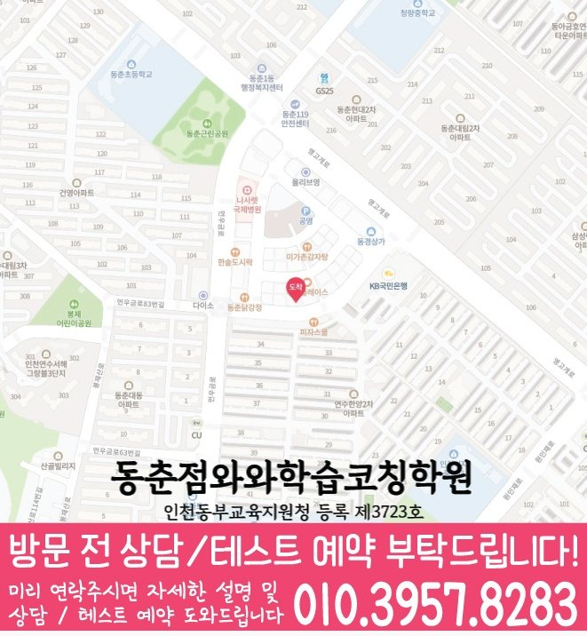

연수동 와와학습코칭센터
연수동에서 안내하는 지점은 와와학습코칭센터 동춘점입니다.
자료상 안내 과목: 국어 · 영어 · 수학 · 과학

수업 안내 이미지

지점·과목 안내
연수동 수업을 알아볼 때 확인할 지점
연수동에서 수업을 알아보는 학생에게 안내하는 지점은 와와학습코칭센터 동춘점입니다. 지점 위치와 과목별 학년을 먼저 확인해 주세요.
과목별 안내 학년
- 국어
- 중1~중3 / 고1
- 영어
- 초3~초6 / 중1~중3 / 고1~고2
- 수학
- 초3~초6 / 중1~중3 / 고1~고2
- 과학
- 초3~초6 / 중1~중3 / 고1
제공 자료에 기재된 학년입니다. 현재 개설 과정·수업 시간·반 편성은 상담에서 확인해 주세요. 안내가 없는 학년은 수업 가능 여부가 확인되지 않았습니다.
실제 지점 위치
와와학습코칭센터 동춘점
인천 연수구 앵고개로264번길 40 남지빌딩 4층 와와학습코칭센터
주소로 네이버 지도 검색등록 정보·교습비·주변 학교
교육지원청 등록번호: 인천동부교육지원청 등록 제3723호
주변 학교 참고: 인천문남초등학교 · 인천연수초등학교 · 인천연화초등학교 · 인천중앙초등학교 · 인천함박초등학교 · 연수중학교 · 연화중학교 · 인천중학교 · 연수고등학교 · 연수여자고등학교 · 인천대건고등학교 · 인천생활과학고등학교 · 인천여자고등학교. 재학생 수강 여부나 학교별 반 편성을 뜻하지 않습니다.
센터 위치 안내

학습 상담 준비
동춘점 상담을 준비하는 순서
연수동에서 수업을 찾는 학생에게 연결된 지점은 와와학습코칭센터 동춘점입니다. 필요한 과목과 학년을 확인한 다음 실제 통학 일정에 맞춰 상담을 준비해 주세요.
함께 의논할 주제 학습 우선순위 정하기·오답 재확인 습관
과목과 학년부터 확인
가장 도움이 필요한 과목, 현재 교재, 학교 진도를 알려 주세요. 과목별 안내 학년이 다르므로 여러 과목을 함께 수강하려면 각각 확인해 주세요.
학교생활과 이동 일정
하교 시간과 다른 활동을 포함한 일주일 시간표를 준비해 주세요. 위의 실제 지점 주소를 기준으로 이동 시간을 살펴보고 수업 요일과 시작 시간을 문의해 주세요.
학교와 일정
연수동 학교생활과 함께 맞춰 볼 일정
- 초등
- 인천문남초등학교 · 인천연수초등학교 · 인천연화초등학교 · 인천중앙초등학교 · 인천함박초등학교
- 중등
- 연수중학교 · 연화중학교 · 인천중학교
- 고등
- 연수고등학교 · 연수여자고등학교 · 인천대건고등학교 · 인천생활과학고등학교 · 인천여자고등학교
지역 참고 학교이며, 재원 여부나 학교별 반 운영을 뜻하지 않습니다. 재학 중인 학교의 교재·시험 범위·하교 시간을 기준으로 상담해 주세요.
자주 묻는 질문
수강 전 확인할 질문
동춘점의 과목별 수업 안내 학년은 어떻게 되나요?
자료에 기재된 학년은 국어 중1~중3 / 고1, 영어 초3~초6 / 중1~중3 / 고1~고2, 수학 초3~초6 / 중1~중3 / 고1~고2, 과학 초3~초6 / 중1~중3 / 고1입니다. 사회의 해당 학년 정보는 기재되어 있지 않아 수강 가능 여부를 상담으로 확인해야 합니다. 현재 개설 과정과 수업 시간은 지점 상담에서 확인해 주세요.
교습비와 현재 수업 시간은 어떻게 확인하나요?
센터별 교습비 자료에서 안내 금액을 확인할 수 있습니다. 희망 과목·학년을 알려 주고 현재 과정의 교습비, 교재비 등 추가 비용, 수업 요일과 시간을 확인해 주세요.
상담에서 학습관리 방식은 무엇을 물어보면 좋나요?
학생이 푼 문제와 실제 공부량을 어떻게 확인하는지, 오답을 언제 다시 보는지, 계획한 양을 끝내기 어려울 때 어떻게 조정하는지 물어보세요. 점검 주기와 학부모 안내 방식도 함께 확인해 주세요.
상담 후 정리할 내용
안내받은 수강 과목·학년, 수업 요일·시간, 교습비와 추가 비용을 함께 적어 두세요. 학생이 시작할 학습 범위와 과제량, 다음에 학습 상태를 확인할 시점도 정리하면 계획을 이어 가기 좋습니다.